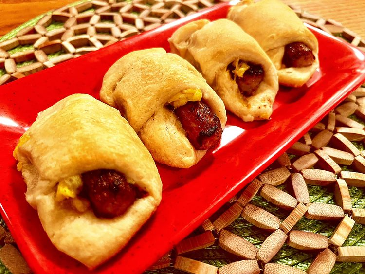

Description
These crescent sausage and egg roll-ups, scrambled egg and a sausage link baked inside a crescent roll, make a great breakfast, at home or as a grab-and-go meal.
Ingredients
- 2 large eggs
- 2 tablespoons milk
- 1 tablespoon butter
- salt and freshly ground black pepper to taste
- 1 (8 ounce) tube refrigerated crescent rolls
- 8 breakfast sausage links, cooked
Directions
- Preheat the oven to 350 degrees F 180 degrees C.
- Whisk eggs and milk together in a bowl until combined. Melt butter in a skillet over medium heat. Add egg mixture and cook, stirring constantly, until eggs are set, about 3 minutes. Season with salt and pepper.
- Unroll crescent roll dough and separate into 8 triangles. Add 1 tablespoon scrambled egg and 1 sausage to the wide end of a crescent roll. Roll up to enclose contents; place on an ungreased baking sheet. Repeat with remaining ingredients.
- Bake in the preheated oven until golden brown, 13 to 16 minutes.
Home